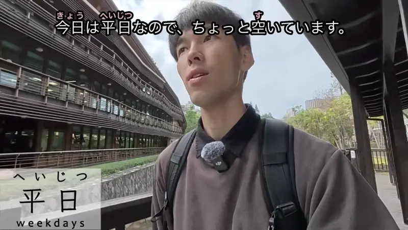
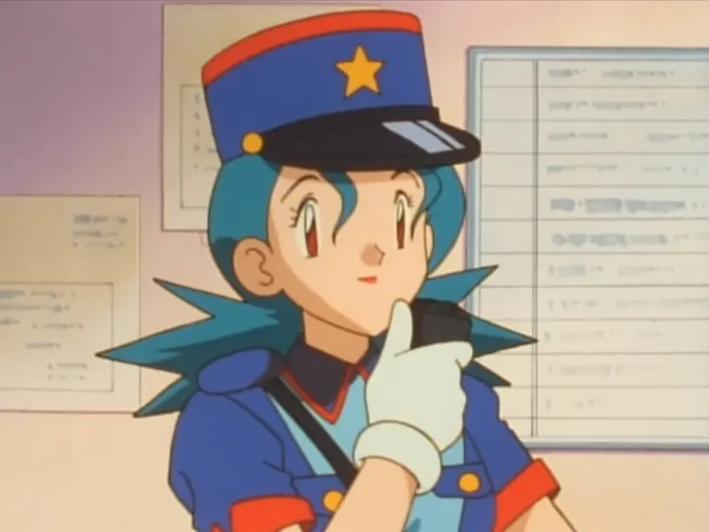
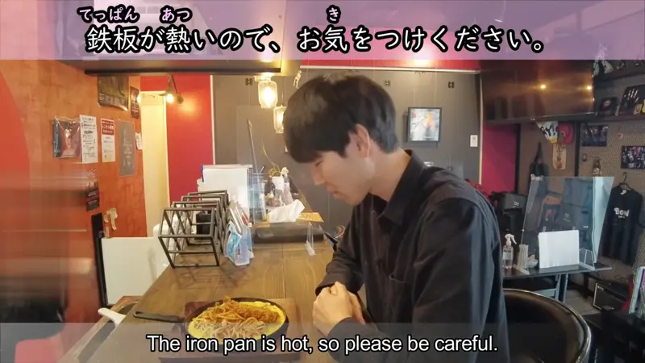
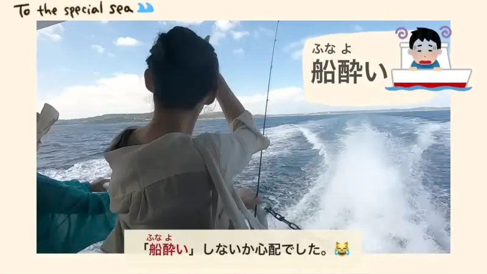
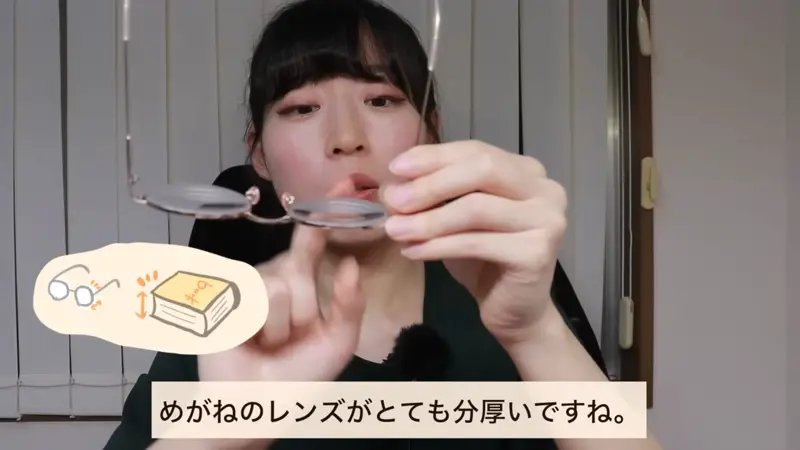
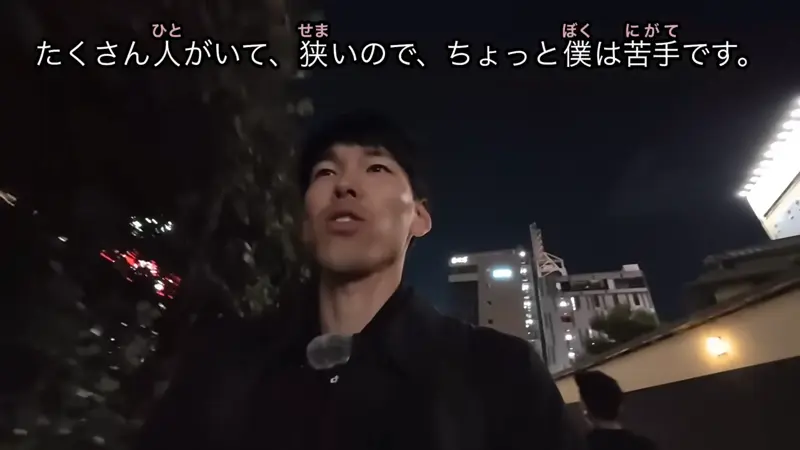
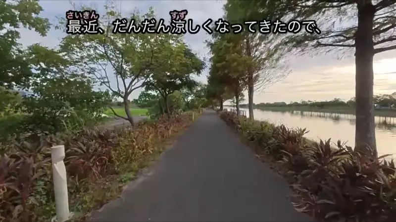
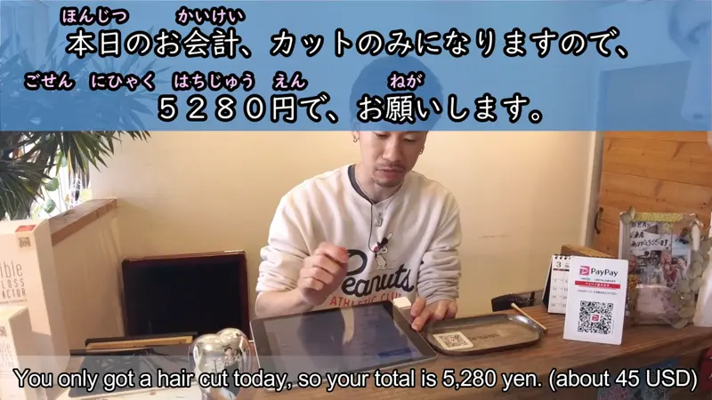
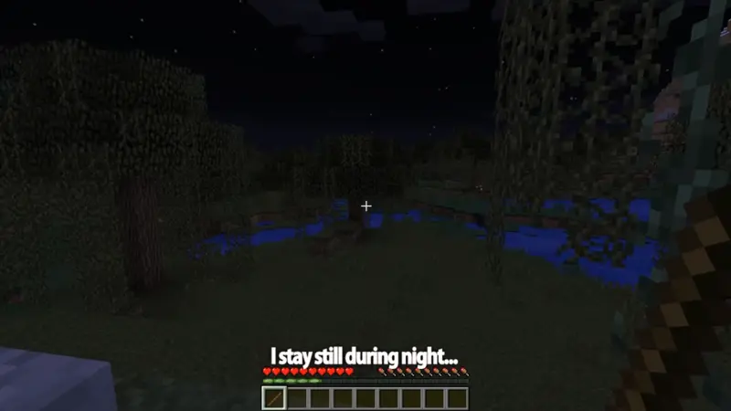

ので

YouTube · video
今日は平日なので、ちょっと空いています。
"It's a weekday today, so it's not very crowded."
ので after a sentence means because or so, like から. The reason comes first: 今日は平日 + なので = "since it's a weekday".
The sentence answers "Why is it so empty?": it's a weekday. ので sounds softer than から, like explaining the situation, so it's the one you hear most in polite talk.
After a noun or a な-adjective, put な before ので: 平日なので. Never 平日だので.

Pokémon: Indigo League · Episode 2
ポケモン誘拐の被害が目立っておりますのでご注意ください。
"Pokémon kidnappings have been on the rise, so please be careful."
In announcements and shops, ので often comes after ます or です: おります + ので. That's extra polite.
Examples
You call your boss in the morning.
熱があるので、今日は休みます。
"I have a fever, so I'll take today off."
Verbs take ので directly. A gentle way to give a reason when asking or telling someone something.
PoliteA friend suggests a walk, but you're tired after work.
今日は疲れたので、家にいるね。
"I'm tired today, so I'll stay home."
ので works in casual talk too. It just sounds a bit softer than から.
CasualAt a hotel desk, the receptionist hands you a map.
駅は少し遠いので、バスが便利ですよ。
"The station is a bit far, so the bus is handy."
い-adjectives take ので directly. No な needed.
PoliteYou're showing a friend your neighborhood.
この辺は静かなので、好きなんです。
"It's quiet around here, so I like it."
な-adjectives work like nouns: 静か + な + ので.
PoliteWith and without
雨だから、行かない。
"It's raining, so I'm not going." Direct. Fine with friends, but can sound blunt.
雨なので、行きません。
"Since it's raining, I won't go." Softer, like you're explaining the situation. Note: 雨だから but 雨なので.
Same meaning as から (Because). The two differences: ので sounds softer and more polite, and after a noun or な-adjective it takes な (平日なので), where から takes だ (平日だから).
Sentence mining

YouTube · video
鉄板が熱いので、お気をつけください。
"The iron plate is hot, so please be careful."
A classic restaurant line. ので makes the warning sound kind, not bossy.

YouTube · video
私は結構酔いやすいタイプなので、船酔いしないか心配でした。
"I'm the type who gets motion sick easily, so I was worried about getting seasick."
タイプ is a noun, so it takes な: タイプ + な + ので.

YouTube · video
私は目が悪すぎるのでめがねのレンズがとても分厚いですね。
"My eyesight is really bad, so my glasses lenses are very thick."
The reason (bad eyes) first, then what follows from it (thick lenses).

YouTube · video
たくさん人がいて、狭いので、ちょっと僕は苦手です。
"There are lots of people and it's cramped, so I'm not great with it."
Two reasons joined with て, then ので after the second one covers both.

YouTube · video
最近、だんだん涼しくなってきたので、運動とかスポーツとかしやすいですよね！
"It's been getting cooler lately, so it's easier to work out or play sports, right?"
Plain past or て-form endings take ので directly: なってきた + ので.

YouTube · video
本日のお会計、カットのみになりますので、5280円で、お願いします。
"Today's bill is just for the cut, so that'll be 5,280 yen, please."
Shop talk: ます + ので, the extra polite version.

PiroPito · Minecraft #06
歩き回るともう、敵に追い掛け回されて殺されるので。
"If you walk around, you get chased down and killed by enemies, [so I won't]."
The sentence stops at ので. The result is left unsaid because it's obvious.
YouTube · video
昨日は本当に大雨もう、雨がたくさん、たくさん降ったので。
"Yesterday was really heavy rain, it rained so, so much, [so...]"
Another one trailing off at ので, very common when explaining what happened.